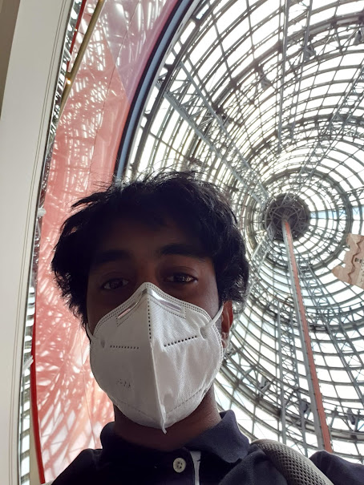
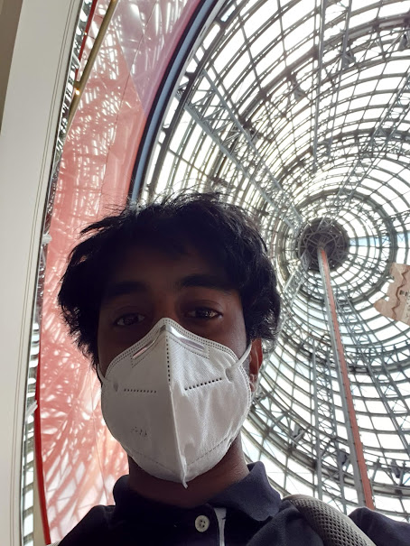

| My Three Personality Types | |
|---|---|
|
myer briggs
16personalities describe the ENFP as “true free spirits,” they are open, extraverted, and optimistic people who try to brighten up the people and their surroundings wherever they go. Optimistic does not mean ignorant however, ENFP’s try to engage emotionally with the people around them as they believe these socials links are one of the most important things that one could have. In the workspace, the ENFP is a person that is open to discussion, believes that every idea is worth a try, and strives to investigate new concepts. As a (T)urbulent variant of the ENFP however, compared to other ENFP “Campaigner’s,” the T variant is more likely to not consider themselves as successful compared to a more assertive individual. ENFP’s are also tainted by their social links as they tend to be “people-pleasers” and will compromise on important tasks to make another person happy. They can over accomodate for others and ignore their own needs and eventually be unable to complete anything for themselves. Their optimistic nature fails to consider the negative attributes of a plan/idea leading to disaster. Myself being an ENFP means I have to more carefully consider others ideas and offers as I might overlook something potentially disasterous and compromise a mission plan or fall being on a group timeline. I can find it hard to engage with monotonous practical tasks and lead a project to be disorganised and so I need to find someone who can counterbalance me and can catch me where I fall and where I can fill in for them. According this scale this type of individual would be an ISTJ-A, a direct and dutiful type of person who acts according to reason and logic, keeps to their words and stays responsible. As previously mentioned, I may have tendancies to lose track of what duties I have to do to make the person in front of me happy, an ISTJ would help me keep on task and focused on what is the most important and effective thing to do. Just as the ISTJ can help me with my downsides, as a ENFP, I can counterbalance them. An ISTJ may be more rule and guideline oriented and may not work well together in a team, enforcing an environment that puts people on edge rather than relaxed and comfortable. Maintaining a good social environment allows for better brainstorming sessions and more creative innovative ideas and I can help produce these conversations that an ISTJ may have troubles instigating. If the ENFP and ISTJ try and engage with eachother instead of acting as counterbalances however, trouble may as occur as the contrasting types may cause conflict and frustration to both parties. While forming a team, I must keep in mind about my positive and negative tendancies and how to accentuate and balance them, I would enjoy working with similar types such as the ENFJ, ISFJ and ESFP’s who are social, energetic, and caring groups of people however as they bring out my positives - they also make the negatives even worse. It is necessary to have types such as the ISTP, ESTJ, and ISTJ’s to make up for the things I tend to do wrong. |
|
|
USC Leadership Style
Out of the six leadership styles defined by the University of Southern California, the Frontline leader is the one who prides themself on authenticity and connections. A Frontline leader is genuine to those they talk to aims to empower the people around them and motivate them to reach for their best. Empathising with the people in your team can help foster a positive environment and motivate people to do work not just for themself but for the team itself. A great team dynamic would consist between the frontline leader and the transformational leader as the frontline creates a cohort of closely knit people willing to work for more than themselves and the transformational leader continously pushes the team towards the unknown and developing the skills of the team. The frontline leader may clash with a person with a contrarian leadership style, while the frontline leader empowers those around him and encourages ideas and conversation, the contrarian must hold opposing thoughts to breed more complex ideas. While this generates new and innovative ideas, it may put down members of the team and hamper their confidence. As a frontline leader, I must keep in mind that this type of process serves the team well and can only help us build a better product. |

|
|
the Big 5 Psychometrics
The Big Five Factor Markers Psychometrics test tells me that I am a highly extroverted, optimistic, imaginative person who stays on the side of idealism rather than realism. My emotional stability might not be top notch but it’s decent compared to others however I am prone to making impulsive decisions and tend to be intensely disorganised. In a workplace or team, my emotional stability can help keep the team together in tense situations and help everyone think rationally and my high percentile extroversion can influence my ability to reach out to other non vocal team members. When forming a team, I should try and keep in mind my low conscientiousness ranking and find someone who can help keep the team organised, it would also help to find someone less agreeable as conflict can pushes the development of creative thinking and idea generation. |

|
 
